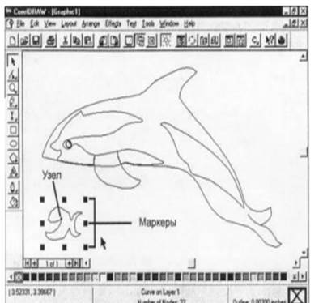

1. Объектімен жұмыс жасаудың негізгі дағдылары
2. Объектілерді байланыстыру
3. Қасиеттер панелімен танысу
Осы уақытқа дейін суреттегі әрбір обьектіні біз жаңадан салатынбыз. Бірақ сіздер кез келген фигураны көшіріп және көшірмені керек жерге орналастырып, сонымен қатар, жасалынған фигураны редакциялайда аласыздар. Төменде қарастырылатын, объектілермен жүргізілетін операциялар оларды белгілеуден (айқындаудан) басталады:
· Объект таңдалған Нұсқағыш иструментімен белгіленіп реакцияланады.
· Егер объектілер айқасатын болса, (жоғарғы екі элипс сияқты), онда ортақ аймақта шерткенде обектілердің кейін салынған таңдалады, өйтекені бағдарлама оны алдыңғысының үстіне салынған деп есептейді. (жоғары қабатта тұрған.)
Объектіні көшірейік.
Объектіні көшіріп Копировать (кґшіру, Сору) командасы Правка менюінде болады. Объектіні белгілеп, осы команданы таѕдаңыздар. Объектіні кірістіру үшін Правка менюіндегі Вставить (Кірістіру, Paste) командасын таѕдаңыздар. Кірістіру, көшіру және қиып алу командаларының батырмалары басқару панелінің сол жағында тұр.
Жылжыту
Көшірме кірістіргеннен кейін белгілеуді қалпында қалады. Оны керек орынға қозғап апару үшін қасиеттер панелінің Координаттар өрісін пайдалануға болады. Бұл тәсіл орналастырудың жоғары дәрежелі дәлдігімен қамтамасыз етеді. Бірақ жұмысты жылжыту үшін әдетте объектілерді интерактивті жылжыту қолданылады. Осылайша программаның кез келген объектілерін жылжытуға болады.
Көлденең және тік ығысу.
Егер объектіні жылжытқанда Ctrl пернесін басып ұстасаңыз, онда ығысу дәлме –дәл көлденең немесе тік жүргізіледі.
Тәждің екінші кертші кішірек болуы керек. Өлшемдерді өзгерту үшін қасиеттер панелін тағы пайдалануға болады немесе өлшемдерді интерактивті өзгертуге болады.
1. Сол жақтағы басбұрышты белгілеңіздер. Бұрыштық манипулятордың бірінде шертіңіздер де, оны апарыңыздар. Нұсқағыш екібасты стрелка түрінде болады.объект нұсқағыштың қозғалуына ілесе отырып, өлшемдерін өзгертеді. Объектінің қажет өлшемдеріне жетіп, оны орнына қойыңыздар.
Объектілерді Ріск құралының кӛмегімен ғана белгілеуге болады. Егер Ріск құралын алдын ала тышқанның кӛмегімен алып алған болсаңыз, онда объектілерді мынадай тәсілдермен белгілеуге болады.
- бірнеше объектілерді Shift пернесін басып тұрып, кезек-кезек тышқан көрсеткішін басу арқылы;
- бірнеше объектілерді бірмезгілде тіктөртбұрышты пунктир контур арқылы. Белгіленген объектілер экранда сегіз тіктӛртбұрышты қара торлармен қоршалады. Бұл маркерлер объект ӛлшемін ӛзгертуге: созуға, үлкейтуге, кішірейтуге мүмкіндік береді. Сонымен қатар объект контурында бір немесе бірнеше кішкентай квадратты түйіндер пайда болады. Олардың саны белгіленген объектер санына байланысты. Экранның төменгі жағындағы қалып-күй қатарында белгіленген объектінің түрі (тіктөртбұрыш, эллипс, көпбұрыш, қисық және т.с.с.) немесе белгіленген объектілер саны көрінеді.
Графикамен жұмыс істеу барысында Ріск құралын алсаңыз (сурет.1), автоматты түрде басқа құралмен жұмыс істеген соңғы объект белгіленеді. Объектінің белгіленгенін жою үшін тышқан көрсеткішін жұмыс бетінің кез келген бос жерінде шертуге болады.
Немесе келесі, басқа объектіні белгілеу, алдыңғы объектінің белгілеуін жояды.

Бақылау жұмысы:
1.CorelDraw-да объектілермен қандай әрекеттер орындауға болады?
2.Объектілердің формасын редакторлайтын қандай саймандар бар және олардың жұмысын түсіндіріңіз?
3.Объектілерді туралау, реттеу түрлері?